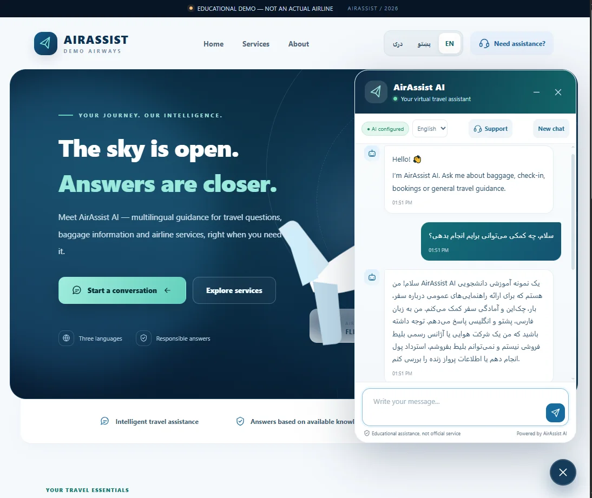
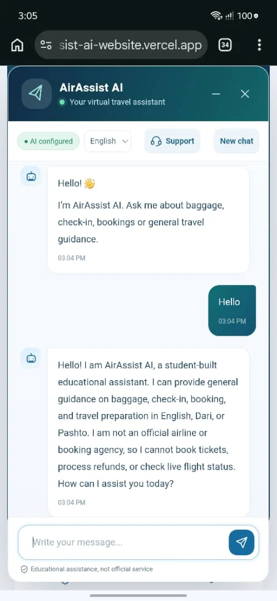
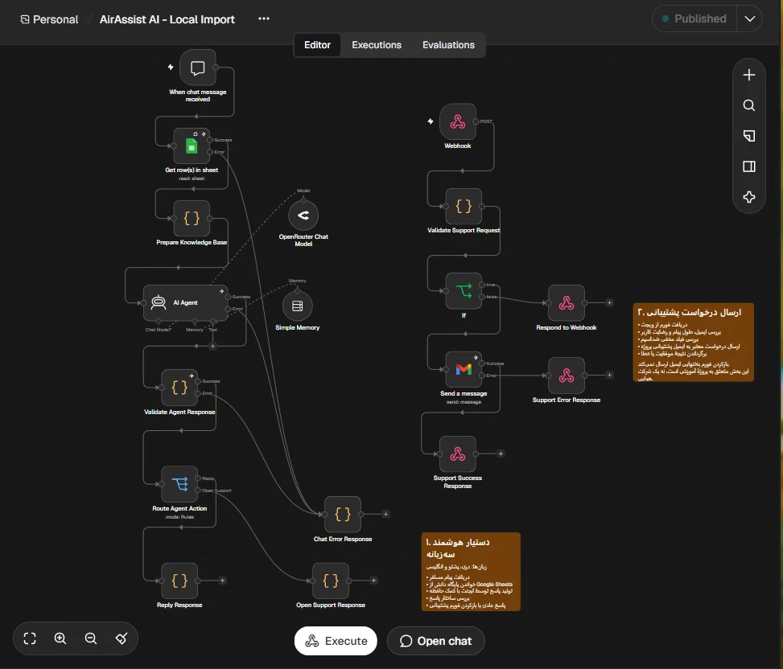
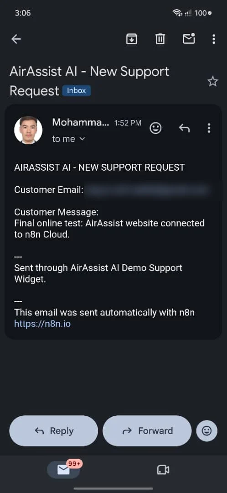

Free hosting for the workflow
My first plan was to run n8n on a free server with a separate database. It ran out of memory and returned HTTP 502 errors, so I moved the workflow to n8n Cloud and kept the website on Vercel.
Individual capstone · UNICEF Youth Digital Skills Programme (HBC-YDP-2026), Horizon Bridge Consulting · Presented at the final defence, October 2026
The demo runs on free hosting tiers, so it can occasionally be slow or unavailable.
A trilingual customer-support chat widget for a fictional airline, “AirAssist Demo Airways”. Visitors ask questions in Dari, Pashto or English and get answers drawn from a knowledge base, or send a support request by email when the assistant cannot help. I designed and built it on my own.
It is clearly labelled as an educational demo: it does not book tickets, issue refunds or check live flights.
The assistant answered the Dari question in Dari — see the screenshot below.
Tap a screenshot to enlarge it.




My first plan was to run n8n on a free server with a separate database. It ran out of memory and returned HTTP 502 errors, so I moved the workflow to n8n Cloud and kept the website on Vercel.
The model sometimes returned an empty answer. I added a validation step and a clear error message so the chat never fails silently.
The assistant can open a support form, but an email is sent only after the visitor completes the form, gives consent and passes validation.